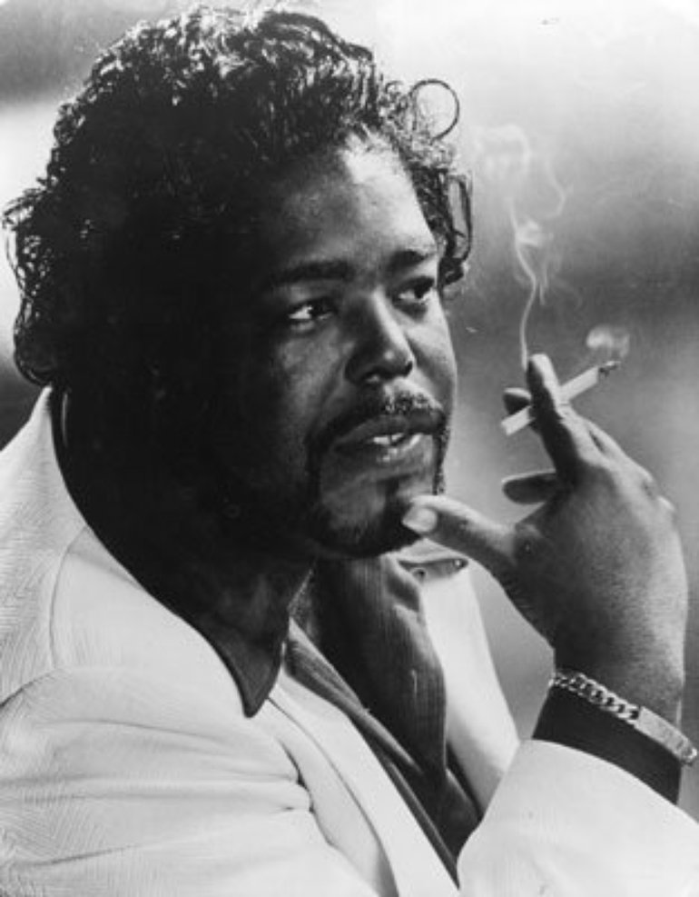
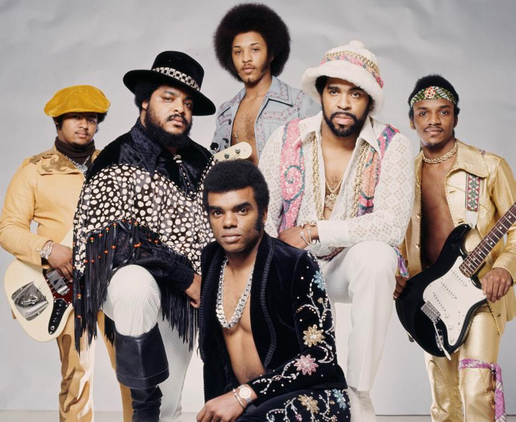
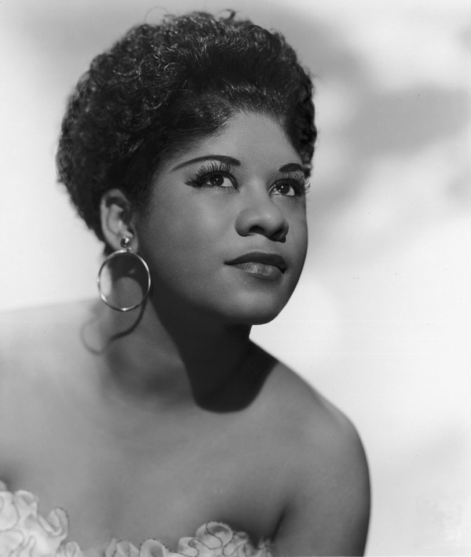

R&B Artists & Location Highlights
  
Evolving out of jump blues in the late '40s, R&B laid the groundwork for rock & roll. R&B kept the tempo and the drive of jump blues, but its instrumentation was sparer and the emphasis was on the song, not improvisation. It was blues chord changes played with an insistent backbeat. During the '50s, R&B was dominated by vocalists like Ray Charles and Ruth Brown, as well as vocal groups like the Drifters and the Coasters. Eventually, R&B metamorphosed into soul, which was funkier and looser than the pile-driving rhythms of R&B. Soul came to describe a number of R&B-based music styles. From the bouncy, catchy acts at Motown to the horn-driven, gritty soul of Stax/Volt, there was an immense amount of diversity within soul. During the first part of the '60s, soul music remained close to its R&B roots. However, musicians pushed the music in different directions; usually, different regions of America produced different kinds of soul. In urban centers like New York, Philadelphia, and Chicago, the music concentrated on vocal interplay and smooth productions. In Detroit, Motown concentrated on creating a pop-oriented sound that was informed equally by gospel, R&B, and rock & roll. In the South, the music became harder and tougher, relying on syncopated rhythms, raw vocals, and blaring horns. All of these styles formed soul, which ruled the black music charts throughout the '60s and also frequently crossed over into the pop charts. During the '60s and '70s, soul began to splinter apart -- artists like James Brown and Sly Stone developed funk; Kenny Gamble and Leon Huff initiated Philly soul with the O'Jays and Harold Melvin & the Blue Notes; and later in the decade, danceable R&B became a mass phenomenon with the brief disco fad. During the '80s and '90s, the polished, less earthy sound of urban and quiet storm ruled the airwaves, but even then, R&B began adding stylistic components of hip-hop until -- by the end of the millennium -- there were hundreds of artists who featured both rapping and singing on their records.
https://www.allmusic.com/genre/r-b-ma0000002809